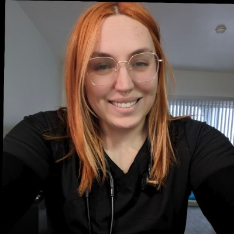
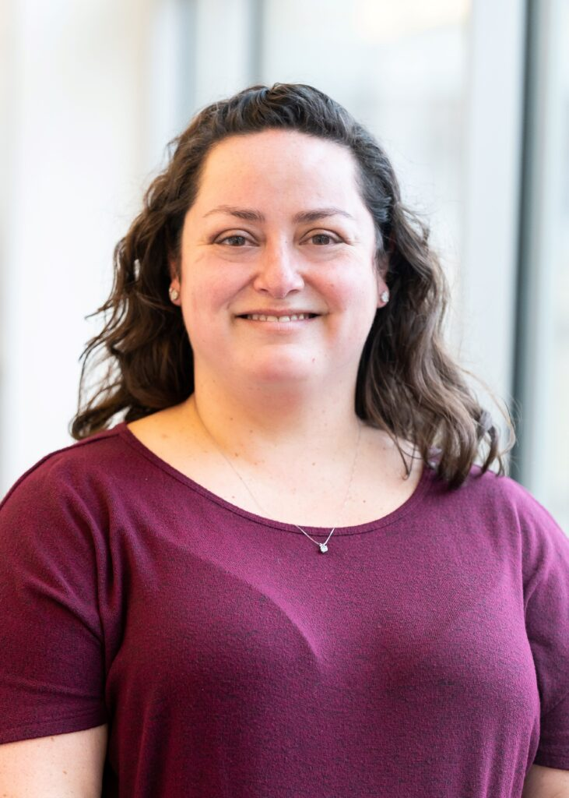
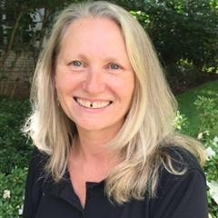
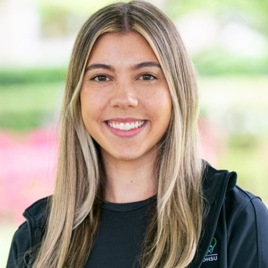

- Design
- Pilot implementation study
- Setting
- 4 walk-in urban community health events
- Location
- Portland, Oregon
- Period
- 2023–2024
- Sample
- N=53 consented · mean age 74.6 years · 73% female
- IRB
- STUDY00026434
Community-based STEADI screening identified older adults with substantial, often underrecognized fall risk outside routine clinical care. These findings support community screening as a feasible upstream screening and intervention model for larger-scale effectiveness testing.
Future work will test whether community-based STEADI screening improves fall-prevention engagement, evidence-based intervention uptake, documented falls, and fall-related emergency department utilization, particularly in communities with high fall risk and limited access to primary care fall-prevention services.
Screening & Measures
- STEADI 12-item questionnaire — Score ≥4 classified as high fall risk.
- FES-I (Falls Efficacy Scale–International) — Score ≤19 indicated low concern about falling.
- Self-perceived fall-risk items — Single-item risk rating plus PCP fall-prevention discussion in the prior year.
- Performance battery — Timed Up and Go, 30-second sit-to-stand, 4-stage balance test, and orthostatic blood pressure.
- Follow-up survey — Administered at 3 and/or 6 months post-screening; 43.4% completed at least one survey.
All enrolled participants received individualized, STEADI-guided fall-prevention education on-site. High-risk participants additionally received motivational interviewing and evidence-based referrals to community programs.
Read the full abstract
- Centers for Disease Control and Prevention. Facts About Falls. cdc.gov/falls
- Hopewell S, et al. Multifactorial and multiple component interventions for preventing falls in older people living in the community. Cochrane Database Syst Rev. 2018;7(7):CD012221.
- Stevens JA, Phelan EA. Development of STEADI: a fall prevention resource for health care providers. Health Promot Pract. 2013;14(5):706–714.
- Burns ER, et al. Primary care providers’ discussion of fall prevention approaches with their older adult patients. Prev Med Rep. 2018;9:149–152.
- Karlsson L, et al. Outcomes of a physical therapist-led, statewide, community-based fall risk screening. J Geriatr Phys Ther. 2020;43(4):185–193.
Educational videos from the OHSU Trauma Center fall prevention series. Practical guidance for older adults, caregivers, and clinicians.
More videos in this series at ohsu.edu/trauma-center/fall-prevention.
Curated materials for clinicians, older adults, families, and community partners. These resources include the event booklet used in OHSU community screening events and selected CDC STEADI tools for screening, assessment, education, and fall-prevention planning.
Participant-facing booklet used during community fall-risk assessment events. Includes screening questions, functional assessment worksheets, and space for fall-prevention planning.
Clinician tools
- STEADI Clinical AlgorithmCDC workflow for fall-risk screening, assessment, intervention, patient education, and follow-up.Open PDF →
- Provider Pocket GuideConcise provider reference for talking with older adults about falls, modifiable risks, and prevention planning.Open PDF →
- Stay Independent QuestionnaireSTEADI checklist that clinicians and patients can use to identify fall risk.Open PDF →
- Functional Assessment ToolsCDC tools for the 30-second chair stand, 4-stage balance, Timed Up & Go, and orthostatic blood pressure assessment.Open CDC →
Patient & family handouts
- What You Can Do to Prevent FallsCDC brochure for older adults with practical steps to reduce fall risk.Open PDF →
- Check for Safety: Home Fall Prevention ChecklistPractical checklist for identifying and reducing common fall hazards at home.Open PDF →
- Family Caregiver Fall Prevention GuideCDC brochure for family caregivers with steps to help protect older adults from falls.Open PDF →
- Postural Hypotension: What It Is & How to Manage ItPatient-friendly CDC brochure on dizziness, blood pressure changes, and fall-risk management.Open PDF →
- CDC STEADI Clinical ResourcesFull CDC collection of clinician-facing STEADI tools for screening, assessment, and intervention
- CDC STEADI Patient & Caregiver ResourcesEducational materials and tools for older adults, families, caregivers, and community organizations
- OHSU Trauma Center — Fall PreventionOHSU fall-prevention programs, educational videos, and screening-event information
- Oregon Health Authority — Fall PreventionStatewide fall-prevention programs, data, and professional resources
This page is for research and educational purposes and is not a substitute for medical advice. People concerned about fall risk should speak with a clinician or local fall-prevention resource.
Primary study contacts are shown below. Additional collaborators and screening-event team members are listed in the expandable sections.
Research intern with OHSU CPR-EM contributing to community-based fall-prevention and emergency medicine research. Presenting author for the STEADI pilot.
Emergency medicine physician-scientist and System Director of Emergency Medicine Research at OHSU. Her research focuses on acute-care transitions, risk stratification, and evidence-based care pathways from the emergency department to home.
Research team

Public health researcher contributing to community-engaged emergency medicine and fall-prevention research.
Nurse scientist focused on fall prevention, patient safety, and strategies to engage older adults in evidence-based prevention. Her work includes motivational interviewing approaches to support fall-prevention behavior change.

Adult Trauma Injury Prevention Coordinator at OHSU, where she leads community injury-prevention initiatives including Stop the Bleed, fall-risk screening events, and firearm safety education. She founded the Oregon Injury Prevention Coalition and brings nearly 20 years of Level I trauma emergency nursing experience to community-based prevention work.
Screening event & nursing team
Trauma Program Director with more than 28 years of emergency, critical care, and trauma nursing experience. Her background includes trauma program leadership, regional trauma-system support, and trauma education across DSTC, ATLS, DMEP, RTTDC, and TNCC.

Trauma Program Coordinator with more than 23 years of acute-care trauma nursing experience at OHSU, including staff nurse, charge nurse, and trauma coordinator roles. Her background includes trauma performance improvement, nursing education, and global health-focused nurse education.
Trauma Program Coordinator with 18 years of trauma nursing experience at OHSU. Her background includes trauma acute care, Trauma ICU practice, critical care certification, nursing education, Virtual ICU implementation, and Military–Civilian trauma program coordination.

Administrative coordinator supporting OHSU trauma program operations and Military–Civilian partnerships. She helps coordinate AMCT3 and SMART program activities, supporting trauma education, readiness, and collaboration across multidisciplinary teams.
Screening events were funded by the OHSU Trauma Program. Study data were managed using REDCap (UL1TR002369). We thank OHSU CPR-EM, the OHSU School of Nursing, and the numerous volunteers who made these events possible.
- CDC. Facts About Falls. cdc.gov/falls
- Stevens JA, Phelan EA. Development of STEADI: a fall prevention resource for health care providers. Health Promot Pract. 2013;14(5):706–714.
- Hopewell S, et al. Multifactorial and multiple component interventions for preventing falls in older people living in the community. Cochrane Database Syst Rev. 2018;7(7):CD012221.
- Burns ER, et al. Older adult fall prevention practices among primary care providers. Prev Med Rep. 2018;9:149–152.
- Karlsson L, et al. Community-based fall-risk screening. J Geriatr Phys Ther. 2020;43(4):185–193.